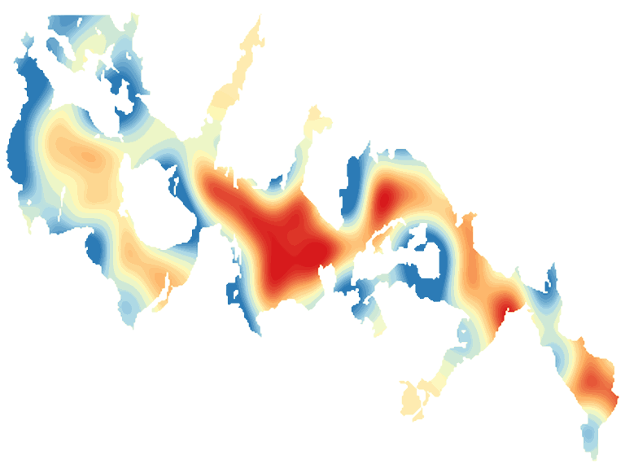

LakeScope › ND
Devils Lake today
Updated 2026-11-26 - Atlas Labs
Clear water, 37°F water, level steady, near normal, windy Thursday (15 mph SSW).
Water level
1451.15 ft
USGS gauge 05056500 - 2026-11-26
7-day trend: steady (-0.04 ft). Compared with normal for this date: +0.8 ft (same weeks, 2016-2025).
Water clarity and algae
Clear water Last clear view: over a week ago. 1 cloudy pass since.
Surface temperature
37°F
seen from space on 2026-11-23

Ice
Open - 0% ice cover
Estimate from weather and satellite, not a measurement. Check the ice yourself before going on it.
Weather, next 3 days
| Day | Sky | High / low | Wind | Rain |
|---|---|---|---|---|
| Thursday | Mostly Sunny | 42 / 33°F | 15 mph SSW | 1% |
| Friday | Mostly Sunny | 44 / 34°F | 21 mph WSW | 5% |
| Saturday | Mostly Cloudy | 37 / 27°F | 28 mph WNW | 1% |
Sunrise 07:58 - sunset 16:47 - Full moon. National Weather Service.
Get the LakeScope app: alerts and the 3-D view of Devils Lake